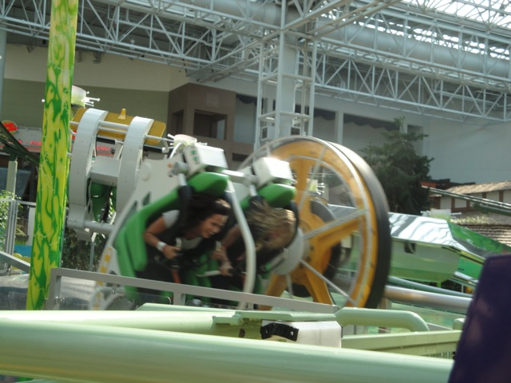
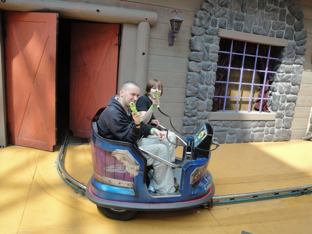
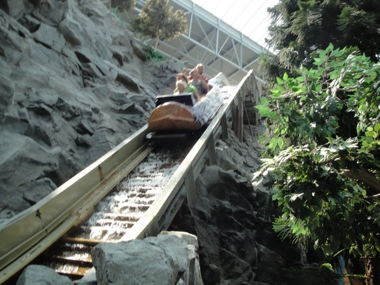

For being inside a mall, this park kicks some major ass. Usually when someone thinks of an amusement park called Nickelodeon Universe, they'll usually think of a little credit whore stop, something like Adventure City would come to mind. But nope. Crammed inside this mall is a full fledged amusement park, that manages to fit a Euro Fighter, a Half Pipe, a Spinning Coaster, Jaguar, a really cool log ride, and much more. And let me say it again since it's really easy to forget while in the park. This is in fact, inside a mall. And not only does the Mall of America make Nickelodeon Universe really cool and protect it from sh*tty weather, but it also saved my ass big time. If my video camera didn't die inside a giant mall where I could just go to Best Buy and get a new (not as good) one, I would've been SCREWED!!! So who knows, Best Buy or maybe some other store may save your ass if you're at Nickelodeon Universe. And best of all, if you're in Minneapolis and the rest of your family is not into roller coasters, you can easily convince them to come here as they'll just spend that time in Mall of America, making it much easier to convince your family to come here than nearby Valleyfair, which does not have a giantass mall included.
Here are the reviews of all the Flat Rides at Nickelodeon Universe. Now let me just say this right now. Nickelodeon Universe has one of the best flat ride collections out of any park I've been to. It is simply awesome. Well, what sort of crazy flat rides does Nickelodeon Universe have? Well, let's first start off with their best flat ride. Brain Surge. Brain Surge is a Chance Unicoaster, which is not a credit (Though I did hear that they hope to really make this into a real rollercoaster, but enough of that pipedream). The best way for me to describe Brain Surge is to imagine if the 2 person Top Spin from the Santa Monica Pier had sex with a teacup ride. That's Brain Surge. It's totally insane. You not only get some good laterals from spinning fast, but it's really easy to control the flipping, which will give you some really crazy flips and spinning. It's sort of like a modern version of Loopen at Knoebels, all the fun without the hard work or thigh pain. But wait, there's more crazy flat rides at Nickelodeon Universe. They also have Jimmy Neutron's Atom Smasher, AKA, Tapico Tumbler. This is an awesome flat ride that they used to have at Knotts Berry Farm, but for some stupid reason, took out. LAME!!!!!!!!! And when I went, they had a Roto Shake too. But sadly, they took that out. =( LAME!!!!!!!! But the good news is that the replacement flat ride they're putting in looks even crazier!!!! =) Much better than say, Riptide. But sadly, now that Nickelodeon Universe took out their Roto Shake, these things are ridicously hard to find now. I think the only places that still have surviving Rotoshakes are a couple parks in Japan and the United Arab Emirates. So it'll take some serious travel if you ever want to get on a Rotoshake. But hey, the replacement looks good. Ok, so those are the best flat rides at Nickelodoen Universe, but that's certainly not all they have. They have Splat-O-Sphere, which the best way for me to describe would be to call it a super super frog hopper. You know those super frog hoppers they have at the Santa Monica Pier, well this is basically a super version of that. And yes, it gives you the same stomach feeling, and yes, it's really cool. Well, that concludes all the flat rides I rode at Nickelodeon Universe, but there's still many more I did not. They have chairswings, except for the fact that these chairswings have backwards seats. That's right. Backwards Seats. I am so f*cking stupid for not doing this. They also have a Falling Star, a Ferris Wheel, Bumper Cars, a Carousel, and various other kiddie flats.

This ride is insane. One of the best flat rides of all time.
Damn you Knotts Berry Farm for taking this out.
Dark Rides
While Nickelodeon Universe isn't Disneyland and crawling with dark rides, they do have a shooting dark ride. And considering that many big parks don't have one, a park inside a giant mall having one is impressive. The shooting dark ride itself isn't too impressive. It's fun and all, but it's not like Men in Black where it's just amazing. But hey. It's fun, it has a short line, you get to shoot things and be in a mall. I'd recommend it. It's a fun ride.

How did you get those guns past Mall Security?
Water Rides
Not only does Nickelodeon Universe have a water ride to begin with, but it's a really freaking good one. The Log Chute is one of the best log rides ever. Aside from having a nice drop and being really fast, you also get plenty of nice suprises such as getting wet, a giant bottle of Knotts Jelly, and of course, the Hooters at the end of the lifthill. It's really f*cking good. And plus, you'd never suspect it's in a mall. So yeah. Get on this ride. It's a really good log flume.

This is inside of a mall you know.
Dining
While technically, Nickelodeon Universe doesn't have any dining options. But the park is inside of a Giant Mall. And guess what's right next door to the park, Yep. You guessed correctly. The Food Court of Mall of America is directly adjacent to the park. And because you're in the Mall of America, and not just any ordianary mall, you have some really great dining options in the Food Court. I ended up eating at McDonalds since I was short on cash, plus I really enjoy Big Macs. But they have much more than just McDonalds. The Mall of America has over 50 resteraunts, some of them are very good such as Bubba Gumps, Famous Daves BBQ, and many other good food options. Your choices for food are pretty much endless.
I like McDonalds, But I'd get something else if I were you.
Theming and Other Attractions
Here are the reviews of all the other stuff at Nickelodeon Universe. Well for theming, there's some occasional Nickelodeon theming, and Log Chute does have some good theming, but really, the main theme that dominates over Log Chute and Nickelodeon is GIANT MALL!!!!! You can totally tell that this place is in a Giant Mall, because you see all the shops and realize, this is a Giant Mall. And as for other stuff to do, that is endless. Inside the actual park, they have a rope climbing attraction that looked really cool. I would've done it if I wasn't broke. =( And considering how you're in the freaking Mall of America, there's TONS of other stuff to do. They have their own Movie Theater, so you could see a movie (though nothing good has come out recently), they also have their own aquarium, that's pretty cool, they also have some arcades, and of course, shopping, shopping, shopping. For any shopoholic to waste their money shopping. So yeah. There's PLENTY of stuff to do besides rides and stuff.
More parks need attractions like this.
In Conclusion
For a park inside of a mall, Nickelodeon Universe really is one of the best. It does a fantastic job of having a wide varitiy of roller coasters, flat rides, and making sure that the rides that they do add are of very high quality. And for those intersted in other stuff, it's right inside of the Mall of America. And the Nickelodeon Theme actually isn't that bad as they don't have anything themed to anything truely horrible yet. I-Carly this. I-Carly that. I-have had it with sh*t on Nickelodeon. So yeah. If you're ever going to go to Mall of America, be sure to check out Nickelodeon Universe. It's a really really nice indoor park.
Enthusiast FAQs.
*Are there kiddy coaster restrictions? - Nickelodeon Universe doesn't have a kiddy coaster. However, if you're one of the people who count powered psuedo-credits, they do allow adults on the one here.
Tips
*Don't treat Nickelodeon Universe as just a credit whore stop.
*Get an unlimited ride wristband.
*Make sure you ride the Backwards Chair Swings. Both Cody and I were f*cking idiots and missed it for some reason.
*Don't buy so much stupid sh*t just because you're in a giant mall. And keep in mind that Shopping can get you high.